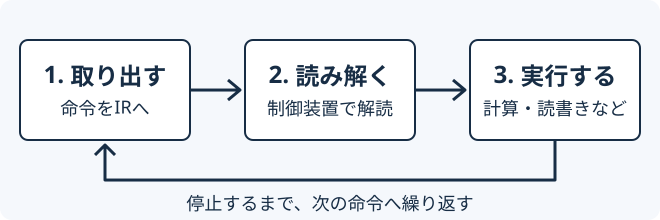

このページで学ぶこと
- CPUの制御装置・演算装置・レジスタの役割を説明できる。
- PC・IR・ACCに入る値の違いを説明できる。
- 命令の取出し・解読・実行の順序を追える。
- 主記憶から読む操作と、主記憶へ書く操作を区別できる。
1.まずイメージを掴む
料理をするとき、手順書を1行読み、意味を理解し、その作業を行います。CPUも、プログラムの命令を順に取り出して処理します。
手順書に当たるのが命令、材料に当たるのがデータです。どちらも主記憶に置き、CPUが必要なものを読み出します。
12と7を足すための4つの命令
- 数12をCPU内へ読み込む。
- 数7を足す。
- 結果19を主記憶へ書き込む。
- このプログラムを停止する。
「計算する」だけでなく、読む・計算する・書くという操作が必要です。
Lesson 03で見たフリップフロップのように、CPUには値を保持する回路があります。CPU内部で少量の値を一時的に保持する場所をレジスタと呼びます。
2.仕組みを理解する
CPUと主記憶を分けて考える
CPUは、処理の順序を指示する制御装置と、足し算や論理演算を行う演算装置（ALU）、値を保持するレジスタなどから構成されます。主記憶はCPUが命令やデータを読み書きする場所です。
コンピュータの五大装置は、入力・出力・記憶・演算・制御です。例えばキーボードは入力、画面は出力、主記憶は記憶を担い、CPUが演算と制御を担います。
| 名前 | 保持するもの |
|---|---|
| PC プログラムカウンタ | 次に取り出す命令の場所（アドレス） |
| IR 命令レジスタ | 今取り出した命令 |
| ACC アキュムレータ | 計算に使う値や、計算途中の結果 |
アドレスは記憶場所を指定する番号です。例えば「10番地の値12」は、場所は「10番地」、中身の数は「12」という意味です。ACCはこの教材で使う計算用レジスタで、実際のCPUのレジスタ構成は機種によって異なります。
番地は「箱の番号」、値は「箱の中の数」
主記憶を、番号の付いた箱の集まりと考えましょう。10番地の箱に、数12が入っているとします。番地の10と、中身の12は別のものです。
この教材のLOAD 10は「10番地の箱を開け、中の数12をCPUの計算用の場所へ読む」という指示です。10という数を書き込む意味ではありません。ADD 11は11番地の中身を足し、STORE 12は計算結果を12番地へ書き込みます。
これらはこのLab用の命令表記です。プログラムやアセンブリを書ける必要はありません。まず日本語の指示と、数がどこからどこへ移るかを追ってください。
取出し → 解読 → 実行を繰り返す

- 取出し（フェッチ）：PCが示す場所から命令を読み、IRに置きます。このLabではPCを次の命令の番地へ進めます。
- 解読（デコード）：制御装置が、命令の種類と対象の番地を読み解きます。
- 実行：指示された読込み・計算・書込みなどを行います。
命令を取り出しただけでは、まだ足し算をしていません。IRにある「何をするか」と、ACCにある「計算の値」を区別しましょう。
3.触ってみる
小さなプログラムを1段階ずつ動かす
予想：計算結果が主記憶に保存されるのは、どの命令のどの段階でしょうか？
- 1. 取り出す
- 2. 読み解く
- 3. 実行する
PC＝次に読む場所、IR＝読み取った指示、ACC＝計算用の数。強調された枠が直前に働いた部分です。
| 場所 | 何をするか | 状態 |
|---|---|---|
| 00番地 | 10番地の数12を読む | — |
| 01番地 | 11番地の数7を足す | — |
| 02番地 | ACCの数を12番地へ保存 | — |
| 03番地 | このプログラムを止める | — |
| 場所 | 用途 | 中身の数 |
|---|---|---|
| 10番地 | 数A | 12 |
| 11番地 | 数B | 7 |
| 12番地 | 保存結果 | 未保存 |
- ACC内の数
- 0
- 12番地の中身
- 未保存
命令の書き方（LOADなど）と簡略モデルについて
Labの指示を命令名で書くと、次のようになります。命令の後ろの数字は、すべて主記憶の場所（番地）です。
LOAD 10：10番地の中身の数をACCへ読む。ADD 11：11番地の中身の数をACCの数に足す。STORE 12：ACCにある数を、保存先の12番地へ書く。HALT：プログラムを停止する。
教育用の簡略モデルです。各命令を1番地に置き、値は10進数で表示します。命令名は読みやすい表記で、実際の機械語はbit列です。3段階は説明の区切りであり、1命令が必ず3クロックで動くという意味ではありません。命令長やPCの更新方法は実際のCPUによって異なります。
初期ACC=0、結果欄の「未保存」はこの実験の初期状態です。HALTはこのプログラムの停止を表します。主記憶への書込みは、電源を切っても残るディスク保存とは異なります。
4.試験ではこう問われる
レジスタの名前より「何を保持するか」
「次に実行する命令のアドレスを保持する」のはPCです。「取り出した命令を保持する」のはIRです。アドレスと命令とデータを区別すると、選択肢を整理できます。
命令を順番に追う例
10番地の箱には数12、11番地の箱には数7が入っているとします。
- 10番地から数12を読む（
LOAD 10）と、ACC内の数は12。 - 11番地の数7を足す（
ADD 11）と、ACC内の数は19。12番地の箱にはまだ書いていません。 - 12番地へ保存（
STORE 12）すると、ACCと12番地の箱の両方に数19が入ります。
読込みと書込みの向き：LOADは主記憶→レジスタ、STOREはレジスタ→主記憶です。問題文で指定された命令の意味を先に確認しましょう。
Labは順番に進むプログラムですが、条件分岐やジャンプの命令ではPCの行き先が変わります。「PCは必ず1ずつ増える」と一般化しないことが大切です。
5.確認問題
全4問です。Labで見た変化を思い出して答えましょう。
教材用のオリジナル問題です。4問すべて回答すると直近の成績を記録します。
0 / 4問回答
学習を振り返る
PC・IR・ACCを指しながら、それぞれに何が入るか説明できそうでしょうか。「計算結果がCPU内にある」と「主記憶へ書き込まれた」の違いも確かめてください。次は、主記憶とキャッシュの役割を学びます。
理解できたら学習完了を記録してください。確認問題の全問正解は条件ではありません。いつでも未完了に戻せます。